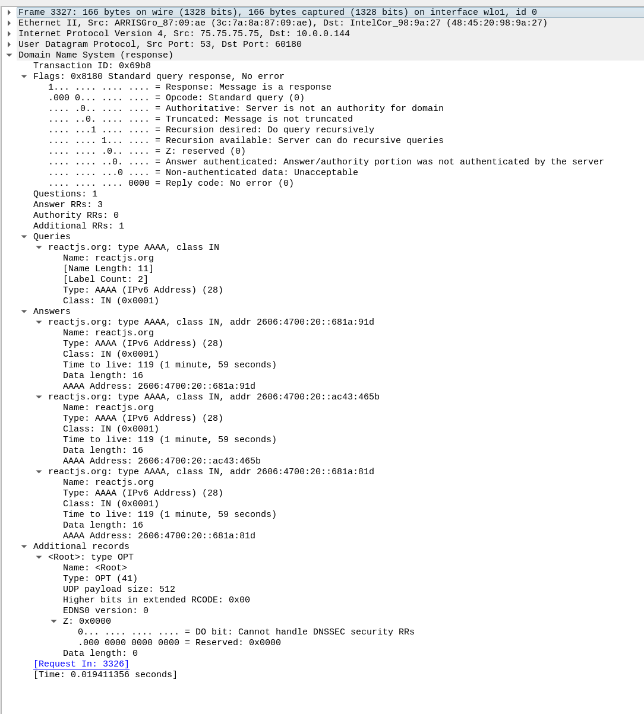

Type A query is for IPV6 ip address.
DNS queries have done on UDP .
Here I am trying to visit reactjs.org in a browser. To get the IP6 address or TYPE AAA or IPV6 address, the OS has sent DNS request for both IPV6 & IPV4 ( discussed
in another article ) to the dns nameserver on the network. My home internet netwrok is from xfinity so the dns nameserver is running at 75.75.75.75. In the
below packet if you observe the request in the Internet Protocoal 4 section we can see the src as my ip and dst as 75.75.75.75.
This is the response for the above DNS request. This tells that there are 3 ip addresses, you can see that they start with 2606.
Response 